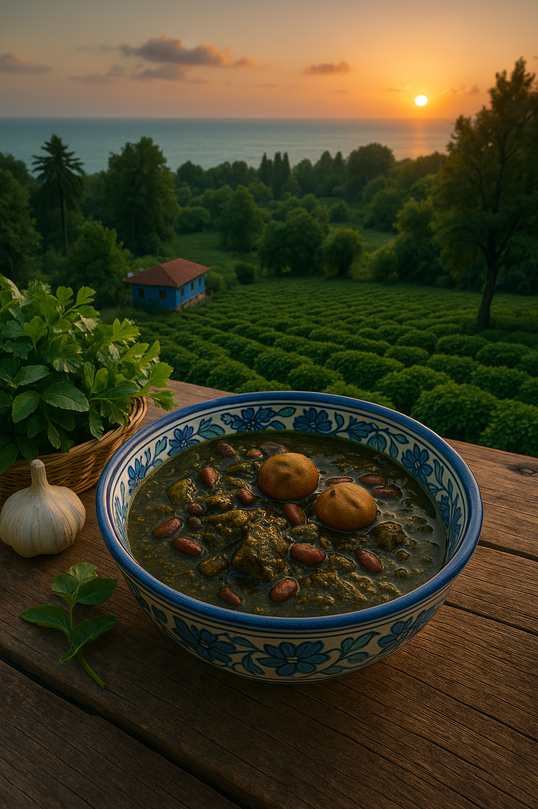

[Northern Iran Style Ghorme Sabzi]

In the lush, green regions of Northern Iran, Ghorme Sabzi takes on a slightly different character. This version is more herbal, sometimes includes local greens, and may even be cooked with a hint of garlic or sour pomegranate paste for extra flavor depth. It's a vibrant, soulful variation that reflects the natural richness of the north.
Instructions:
- Use local herbs: In addition to parsley, coriander, and leeks, northern families often include wild herbs like “khalvash” or “anari” (if available), or substitute with mint and spinach.
- Add garlic: After frying the onion, add 3–4 cloves of minced garlic to bring a deeper aroma.
- Cook the beans and meat as usual: Lamb or beef is browned with turmeric, then mixed with sautéed herbs and kidney beans.
- Optional: Add pomegranate paste: For a regional twist, 1 tablespoon of **paste (rob-e-anar)** can be stirred in along with the dried limes to add a sour layer.
- Simmer slowly: Let the stew cook gently for 2–3 hours. The aroma of garlic, herbs, and limoo amani makes this version feel homely and fresh.
This Northern variation is perfect for those who love complex herbal notes and a slight tanginess in their stew. Best enjoyed with steamed Persian rice, fresh herbs, or pickled garlic.